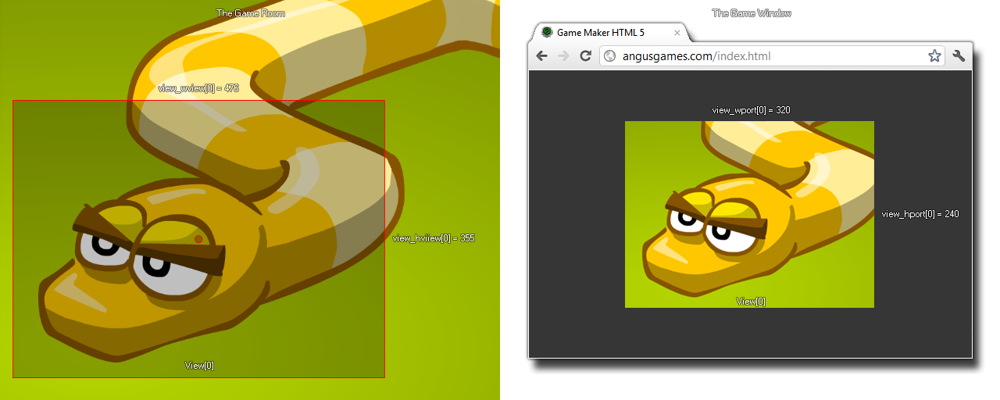

view_wview[0...7]
Returns : Boolean
This variable can be used to get or to set the width of the view in the room. By changing this value you can change the amount of a room that you can see through the view, but bear in mind that this does not change the view port so
setting a view width larger than the view port width will result in the view being scaled down to fit the port, just as a view width smaller than the port width will scale the view up to fit. The following image illustrates this:

var ratio;
ratio = view_hport[0] / view_wport[0];
view_wview[0] -= sc_amt;
view_hview[0] -= sc_amt * ratio;
The above code will scale the view width and height based on the ratio of the view port width and height.